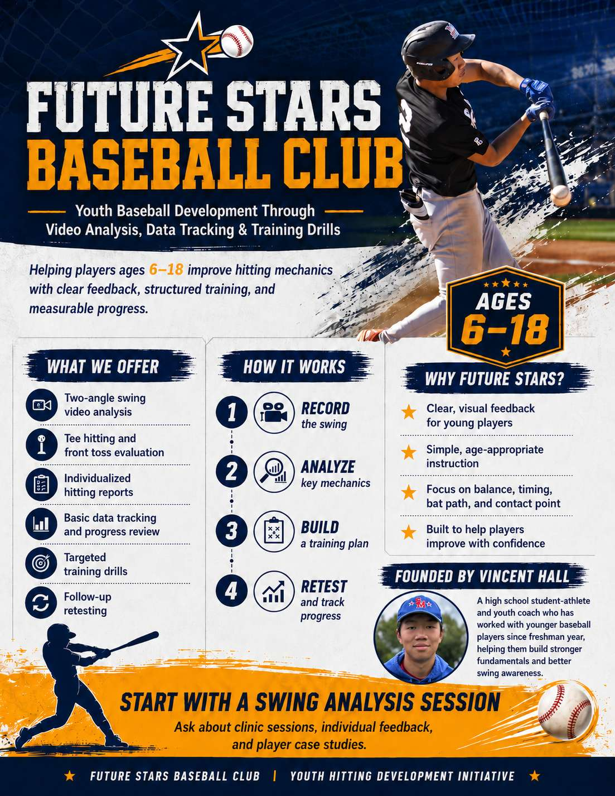

Future Stars Baseball Club is a youth baseball development initiative founded by Vincent Hall. We help players better understand their hitting mechanics through video analysis, data tracking, individualized feedback, and targeted training drills.

Future Stars helps young players grow with a clear and practical development process.
Players are recorded from two standard angles during tee hitting and front toss sessions.
Basic development indicators such as contact quality, direction, timing, balance, and swing patterns are recorded.
Each player receives a small number of clear, targeted drills based on his individual swing needs.
Follow-up sessions help compare baseline swings with future improvement.
Each report focuses on clear findings, practical next steps, and measurable progress.
Approved anonymous player cases show how the development process works over time.
Why this club exists
Future Stars Baseball Club was formally registered in July 2025, but the work behind the club began earlier. Vincent Hall started helping younger baseball players during his freshman year of high school, working with players ages 6–12 on basic hitting and throwing skills.
Over time, he noticed that many young players worked hard but did not always understand what was happening in their own swing. Future Stars was created to turn those observations into a more structured youth development program.
Privacy first: do not publish player photos, names, or videos without confirmed parent permission.